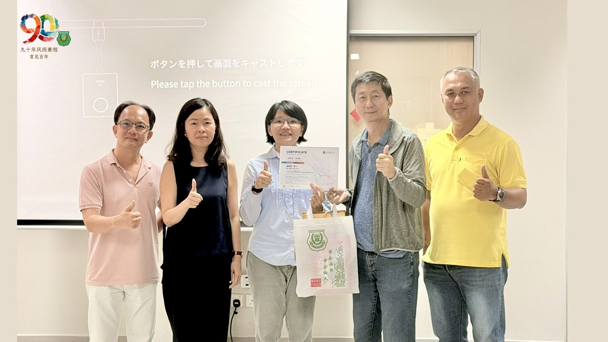
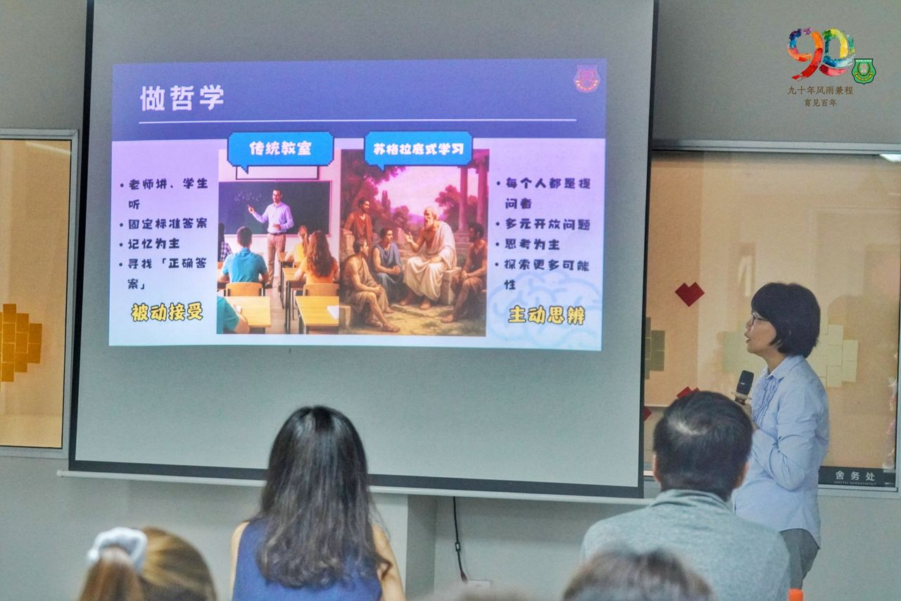
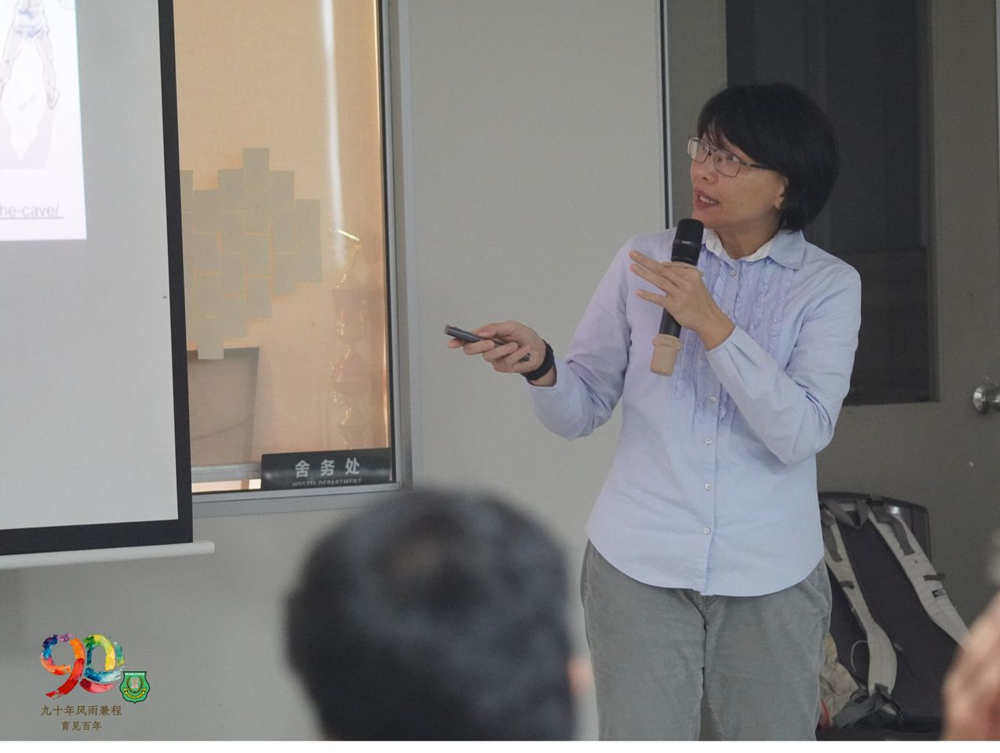
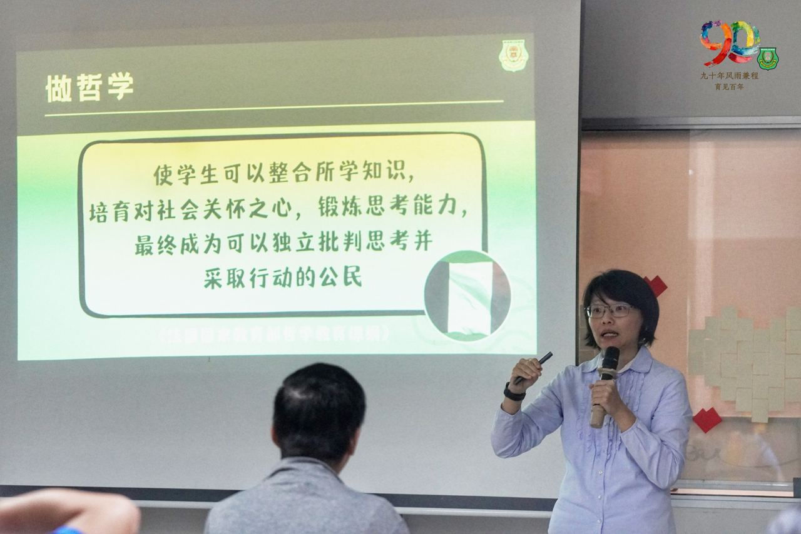
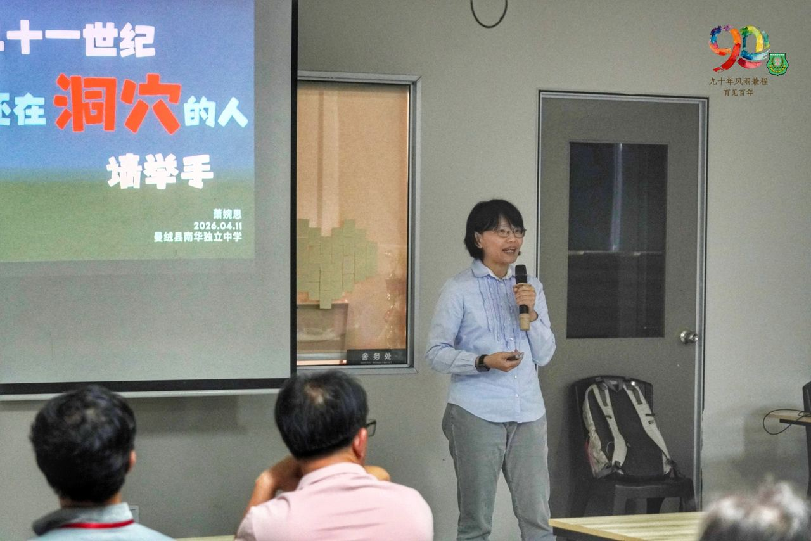

南华独中90周年校庆教育研讨会系列报道之三
南华独中90周年校庆教育研讨会系列报道之三
思辨开蒙，从“看见”到“判断”
萧婉思博士主讲
哲学思辨教育在AI时代校园里的真实作用
“这个时代不缺信息，缺的是判断。”在南华独中九十周年校庆教育研讨会系列讲座的第三场，哲学思辨教育推广者萧婉思博士以一句话道破当代教育最深层的困境：孩子们面对的，从来不是“找不到答案”，而是“不知道哪个答案值得相信”。
为真实世界而迈出洞穴
萧博士以柏拉图的“洞穴寓言”为讲座的哲学思辨教育骨架。洞穴中的囚徒从小被捆绑，只能望见火光投射在石壁上的影子，并以为那就是真实世界的全貌。直到有一天，有人挣脱束缚，转身、走出、经历刺眼的阳光，才开始真正“看见”世界的原貌。
萧博士说，这不只是两千年前的哲学思辨教育命题，而是今天每一个孩子每天都在经历的处境。“我们每天看到的世界，可能不是真的。”她说，这句话的重量，在信息爆炸的时代比任何时候都来得更沉。
她援引自身经历：初三那年，在一个平凡的下午吃炒糕时，她突然涌现一个想法——会不会有摄影机在记录她的一切，就像电影《楚门的世界》里那样？那一刻的“不对劲”，她说，正是哲学思辨教育的火花，是一个人开始真正思考世界与自我的起点。
背负速食知识的代价
萧博士坦言，哲学思辨教育推广最大的阻力，不来自课程设计，而来自时代本身。“哲学思辨教育为什么没办法普及？因为它是跟这个社会格格不入的。”资本主义社会追求效率，要求快、要求准、要求立刻得到答案——而哲学思辨教育恰恰相反，它要求人慢下来，要求人质疑，要求人承受“不知道答案”的不安。
她特别提到AI时代带来的代际落差：今天仍在推动教育改革的这一代教育者，走过了扎实的传统教育路径，才得以用AI事半功倍；然而今天的孩子，从出生就置身于AI的包围之中，完全跳过了那一段慢慢积累判断力的历程。
“这些快的背后，是有代价的。”
面对中学六年的考试压力与进度要求，萧博士没有回避矛盾，而是以问题作为讲座的结语方向：“在这过程里面，要如何慢下来？我们要如何达到平衡？”她相信，这正是此次研讨会存在的意义——让教育者聚在一起，集体寻找那个在体制内仍能让“哲学思辨教育”生根的可能。
上下共推哲思教育进程
讲座来到了最后的问答环节，与会者与萧博士、董事长颜登逸先生、董事们及校长陈丽冰博士之间展开了深入交流，话题延伸至哲学思辨教育如何在日常课堂中落地。陈丽冰博士表示，南华独中推行教改2.0，所追求的正是帮助学生“学会读书、学会做人”培养判断力，而非单纯追求成绩；在AI时代，这一教育理想比任何时候都来得更为迫切，也更具现实意义。
讲座所激起的涟漪，并未止于会场之内。校方其后积极鼓励教师参与由萧博士主持的哲学思辨教育工作坊，共派出八名教师出席。在这场教育研讨会的设计逻辑里，教师从来不是终点，而是关键的逗点，是将思想从讲台传递至课堂、再落地于每一个孩子内心的媒介。这，正是陈校长一贯所坚持的教育初心：一切的思考与改变，最终必须回到孩子身上，才算完整。
出席者包括有南华独中董事长颜登逸先生、董事总务何添胜先生、董事副总务林道祥先生及校长陈丽冰博士。本场讲座透过线上报名，亦吸引了他校董事长、独中校长与教师，以及关心华教的前线教育工作者共襄盛举。




